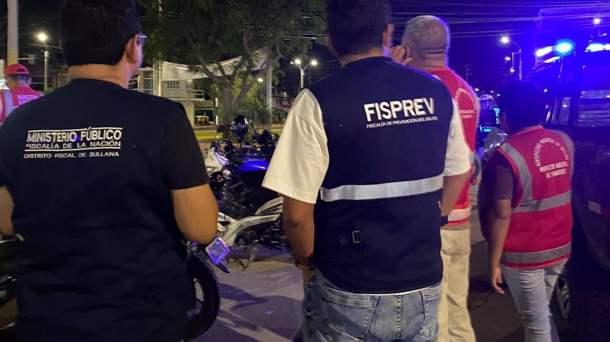

Consternación en toda una región ha causado la muerte de dos hombres a los que asesinaron a balazos en el sector Intimachay, del centro poblado de Chinchán, distrito de Huariaca, provincia de Pasco.





Consternación en toda una región ha causado la muerte de dos hombres a los que asesinaron a balazos en el sector Intimachay, del centro poblado de Chinchán, distrito de Huariaca, provincia de Pasco.
Es Salud protege a bebés prematuros con tecnología y cuidados especiales. Cobertores especiales para conservar el calor corporal El Hospital Nacional Edgardo Rebagliati utiliza los cobertores oclusivos para proteger a los bebés que nacen antes de las 32 semanas de gestación.
LOS BENEFICIOS DEL SEGURO SOCIAL AUMENTARÁN UN 3,6 por ciento Los pagos correspondientes a enero de 2027 incorporarán el ajuste por costo de vida. La medida alcanzará a casi 72 millones de beneficiarios del Seguro Social, entre ellos jubilados y personas que reciben prestaciones por sobrevivientes o discapacidad.
Añadir CDN a Google Escuchar nota Wilfrido Vargas apelará sentencia sobre «El Baile del Perrito» Wilfrido Vargas y su empresa apelarán el fallo que los condenó a pagar RD14 dólares millones a Juan Valdez por «El Baile del Perrito».
Vanguard International proyecta alcanzar una producción de 8 millones de cajas de uva de mesa en Perú en los próximos dos años. Los cultivos en el radar ¿Qué mercados prioriza Vanguard para exportar uva peruana?
Se reportaron problemas técnicos durante la misa que el papa León catorce ofreció en la base aérea Las Palmas en su última actividad oficial en el Perú.
La presidenta de la república, Keiko Fujimori, y su homólogo de la República Popular China, Xi Jinping. La cita se enmarcó en la Asociación Estratégica Integral que mantienen el Perú y China desde 2013, así como en la conmemoración del 55.º aniversario del establecimiento de relaciones diplomáticas entre ambas naciones.
Cuatro investigados por transportar casi 48 kilos de alcaloide de cocaína, que presuntamente tenían como destino Bolivia, permanecerán 15 meses en prisión preventiva.
La selección peruana sub 20 perdió 9 a 0 ante su similar de Brasil en un encuentro amistoso preparatorio para el Sudamericano de la categoría que se disputará el próximo año. A los 68', Jhuan Nunes, de penal, marcó el 7 a 0 para Brasil.
Cada edición dura menos de dos minutos. En la web tienes el resumen de cada historia y el enlace directo al medio original para leerla completa.
Conoce Olfatecho →